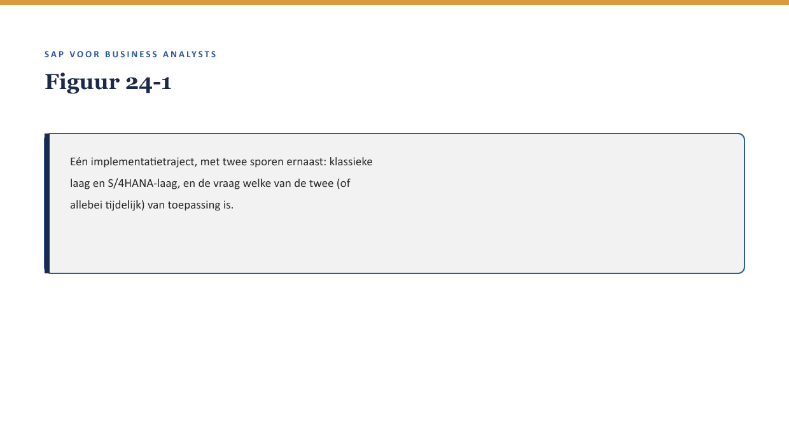
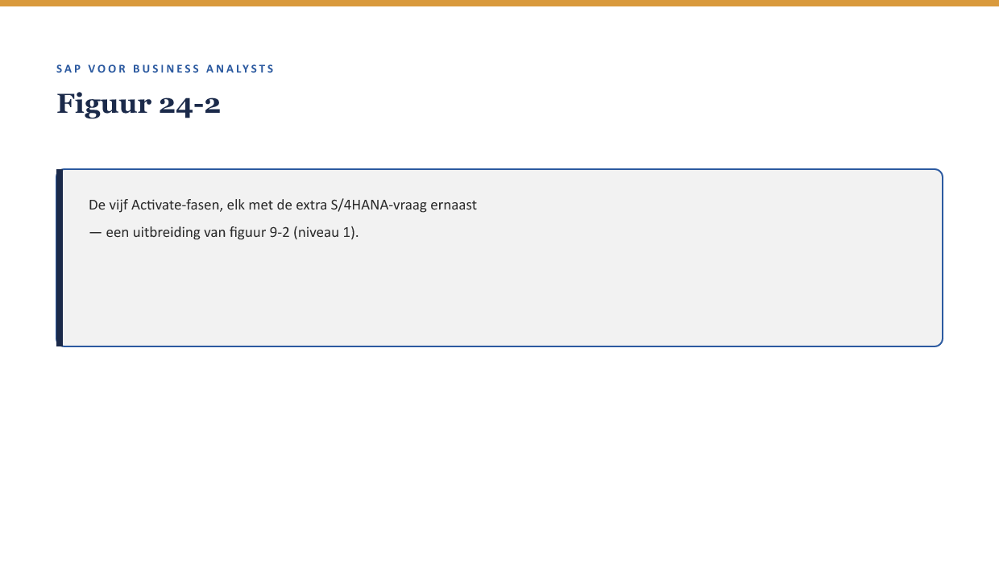

Deel 24 — Case: een proces implementeren
Slidedeck · Niveau 3 Expert · Cursus SAP voor Business Analysts · Ductus
Slidetypen: titleSlide, sectionSlide, bulletsSlide, statementSlide, quoteSlide, tableSlide, figureSlide, opdrachtSlide.
Slide 1 — titleSlide
Case: een proces implementeren Deel 24 · Niveau 3 Expert · Cursus SAP voor Business Analysts
Slide 2 — statementSlide
Een nieuwe pensioenregeling met flexibele pensioenleeftijd.
Klassiek? S/4HANA? Allebei?
Slide 3 — figureSlide

Slide 4 — sectionSlide
Het traject door Activate
Slide 5 — figureSlide

Slide 6 — opdrachtSlide
Opdracht 24.1 — Fasen met extra vraag koppelen
Uit het hoofd: welke extra vraag hoort bij welke fase?
Slide 7 — quoteSlide
Een fit-gap-analyse is niet universeel geldig, ze is gebonden aan de laag waartegen je toetst. — Kernzin, reader §4
Slide 8 — opdrachtSlide
Opdracht 24.2 — Fit op de ene laag, gap op de andere
Bedenk een eigen voorbeeld.
Slide 9 — opdrachtSlide
Opdracht 24.3 — Een dubbel-adviesscenario schrijven
Schrijf een advies dat beide lagen expliciet weegt.
Slide 10 — opdrachtSlide
Opdracht 24.4 — Terug naar de capstone van niveau 1
Zou je nu een S/4HANA-vraag toevoegen aan de fusiecase?
Slide 11 — bulletsSlide
Samenvatting in vijf zinnen
- Dit traject toetst expliciet tegen zowel de klassieke als de S/4HANA-laag
- Elke Activate-fase krijgt een extra vraag door de dubbele laag
- Een fit-gap-uitkomst is laaggebonden
- Een compleet advies weegt beide lagen, zonder impliciete voorkeur
- Dit scenario is representatief voor veel BA’s bij verzekeraars vandaag
Slide 12 — titleSlide
Volgende deel Debugging & runtime-analyse Deel 25